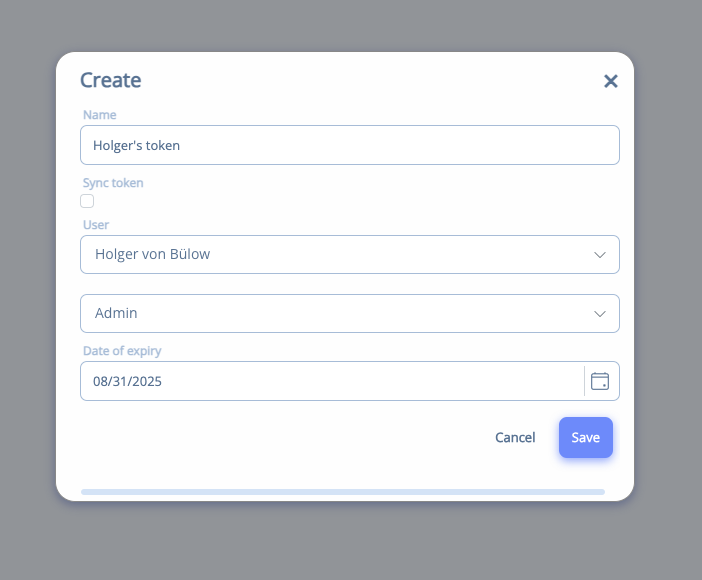
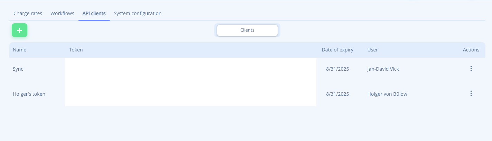

This is the developer guide for the helloHQ API, which provides developers with access to a broad range of entities and business logic within helloHQ.
Base URL: https://api.hellohq.io
Introduction
The helloHQ API is currently available in two versions, each with significant differences as they utilize different standards and technologies. For detailed information, please refer to the individual sections below.
v1
The initial release of our API is based on the OData 4.0 standard, offering comprehensive access to most features of the helloHQ platform.
This version includes all entities available in helloHQ 1.9, ensuring broad compatibility and functionality.
Note: This version does not support the new finance processes.
v2
The second version of our API follows the REST standard, without utilizing OData.
This version allows you to manage all operations related to the new finance processes.
Note: This version powers the new helloHQ 2.0 API and is currently under active development, with new endpoints being continuously added.
Before you begin, please register your client application in the helloHQ admin panel.
Further References
For more information on how to use our API, please refer to the following resources:
OAuth 2.0 is a framework designed for secure user authentication. In typical OAuth 2.0 flows, third-party applications don't handle the user's password but instead receive a token that is valid for a limited time.
To uniquely identify a client, each application must first be registered. Upon registration, the client is provided with an App Id and App Secret, which are used to authenticate with the API.
When a user wants to access the client application, they are redirected to our login page to enter their username and password. After a successful login, the client application is issued an Access Token and a Refresh Token, which can be used to authenticate with the API. From that point, the user is no longer required to be part of the authentication process.
Client Application
To register a client application, navigate to the administration panel in your HQ. There, you can add a new client application by providing a unique name and a display name for the client.
App Id
The App Id used for OAuth 2.0 includes both your HQ customer ID and the client application ID you created: {customer-id}-{client-id}. For instance, 12345-clientapp, where 12345 represents your customer ID, and clientapp is the ID of the client. After registering a client application, you can find the App Id in the administration panel's list.
App Secret
The App Secret is generated within your HQ's administration panel. It is displayed next to the App Id in the list and is used to authenticate the client application when requesting a token.
Scopes
OAuth 2.0 uses scopes to specify the permissions granted to the application by the user. The HQ API currently supports the following scopes:
read_all: read access to all resources
write_all: write access to all resources
Access Token
The Access Token is used to authenticate API requests. It must be included in every API request. Each user has their own unique Access Token, which is only valid for that user and typically expires after a few days.
Refresh Token
The Refresh Token is used to obtain a new Access Token once the original one expires. A Refresh Token remains valid until the user manually revokes access for the client application.
OAuth Endpoints
The following OAuth endpoints are used to obtain an Access Token or exchange a Refresh Token for a new Access Token:
/Account/Authorize: used to retrieve an authorization code
/Token: used to retrieve an Access Token or obtain a new one using a Refresh Token
Authorization Flow
The default authorization flow is OAuth 2.0's Code Grant, primarily used by client applications. It is described in detail below:
Authorization Request
The client constructs a request URI by appending the following parameters to the query string of the authorization endpoint URI, using the application/x-www-form-urlencoded format. The client then directs the user to this URI using a browser window, where the user logs in, provides their credentials, and grants the requested permissions to the client application.
Parameters:
ClientId: the client application's ID
State: an arbitrary state string
RedirectUri: the URI where the browser will redirect after the user grants access
Scope: a space-separated list of API scopes
Example:
GET https://api.hqlabs.de/Account/Authorize?response_type=code&client_id=1234-testapp&state=xyz&redirect_uri=https://client.example.com/cb&scope=read_all write_all
Note: The generated URL must be opened in a browser window for the user to log in and authorize the application.
Ensure that all query parameters, particularly the RedirectUri, are properly URL-encoded.
If the user has already granted the same scopes to the client application, the authorization UI will not be displayed, and the redirection with the authorization code will occur automatically.
User Authentication
The user logs in and either grants or denies the access request.
Authorization Response
If the user grants access, the authorization server provides an authorization code to the client by appending the following parameters to the query string of the redirection URI, using the application/x-www-form-urlencoded format.
Parameters:
RedirectUri: the previously specified redirect URI
AuthenticationCode: the code that can be exchanged for an access token
Note: To create a valid HTTP Authorization header for Basic Access Authentication, encode your App Id and App Secret using Base64 and include them in the Authorization header like this:
Authorization: Basic Base64({AppId}:{AppSecret})
Example:
URL:
POST https://api.hqlabs.de/Token
Header:
Content-Type=application/x-www-form-urlencoded
Body:
POST https://api.hqlabs.de/Token?grant_type=authorization_code
&code=MWG5HTnFn9n8HJ => 'Code from authorize call'
&client_id=1234-testapp =>'From helloHQ UI'
&client_secret=fkgjqoer9tfiealdkcmakwhdf =>'From helloHQ UI'
&scope=read_all write_all
Note: Ensure all query parameters, particularly RedirectUri, are properly URL-encoded.
Access Token Response
If the access token request is valid and authorized, the server issues an Access Token and Refresh Token. If the request fails or is invalid, the server returns an error response.
Parameters:
AuthenticationCode: The code sent in the previous response
RedirectUri: The previously specified redirect URI
Example:
{
"access_token": "FGDoJBgK96Z...", // The Access Token for authorization
"token_type": "bearer", // Token type, usually "bearer"
"expires_in": 1199, // Expiration timespan in seconds
"refresh_token": "K8vma4VohMb...", // The Refresh Token. Used to request a new Access Token
"user_id": 12, // ID of the user for whom these tokens are valid
"user_name": "test.user" // The username of the user
}
Once you have received the Access Token, you can use it to request resources from the API.
Resource Request
To retrieve resources from the API, include the Access Token in the Authorization header as follows: Bearer {AccessToken}.
Example:
Authorization: Bearer FGDoJBgK96Z...
Note that Access Tokens expire and must be refreshed using the Refresh Token.
Refresh Token Request
Access Tokens expire, typically after 30 days. You can use the Refresh Token to obtain a new Access Token. The Refresh Token remains valid until the user revokes it.
Parameters:
GrantType: Set to refresh_token
RefreshToken: The previously received Refresh Token
Authorization: Include an HTTP Basic Authentication header, with the {AppId}:{AppSecret} encoded in Base64, as in: Authorization: Basic Base64({AppId}:{AppSecret})
Example:
POST https://api.hqlabs.de/Token?grant_type=refresh_token&refresh_token=K8vma4VohMb...
Example:
{
"access_token": "FGDoJBgK96Z...", // The new Access Token
"token_type": "bearer", // Token type, usually "bearer"
"expires_in": 1199, // Expiration timespan in seconds
"refresh_token": "K8vma4VohMb...", // The new Refresh Token
"user_id": 12, // ID of the user for whom these tokens are valid
"user_name": "test.user" // The username
}
Using the expand feature allows you to retrieve additional data in a single query. It enables you to access related entities and navigation properties associated with an entity.
To use this feature, include the $expand= parameter in your URL.
Here are some examples demonstrating how to utilize the $expand option.
Expand one property
To expand the default address for a company:
/v1/Companies?$expand=DefaultAddress
Expand multiple properties
To expand both the default address and the company types for a company:
/v1/Companies?$expand=DefaultAddress,CompanyTypes
Expand multiple levels
To expand the positions and the custom fields associated with those positions on an invoice:
Note that this will not work with paths that have mixed cardinality. For instance, Projects -> Positions -> CustomFields is valid, but Projects -> Company -> CustomFields will fail. In such cases, it's recommended to fetch both projects and companies with their respective custom fields, then merge the results on the client side.
Keep in mind that expanding multiple levels can lead to long-running queries and large result sets.
Filter
Filters help you construct efficient queries against our API, allowing you to avoid retrieving unnecessary data and filtering on the client side.
To apply a filter, add the $filter= parameter in the URL.
If you want to filter based on a sub-entity, ensure you expand the entity first.
Here are some examples illustrating how to use the filter option.
Filter by date and time
To retrieve all entities updated since January 26th, 2018:
/v1/Companies?$filter=UpdatedOn ge 2018-01-26
To retrieve all entities updated since January 26th, 2018, at 6:15 PM:
All API responses, along with the bodies of POST and PUT requests, are typically in JSON format and adhere to the OData 4 specification.
In the OData response, the actual data is wrapped in the data field, accompanied by additional metadata.
There are instances where the API provides access to binary data, such as PDFs and images.
For example, documents like invoices and quotations can be retrieved as generated PDF files. When the document is in a draft state, the PDF is created on the fly. Once the document has been sent, the PDF is archived, and the archived version is returned through the API.
You can access the document file's metadata using the following endpoint:
/v1/Invoices(id)/DocumentFile
To access the binary stream (PDF) of the document file, use this endpoint:
/v1/Invoices(id)/DocumentFile/$value
If you have further questions, please reach out to us at support@helloHQ.io.
HTTP Codes
Each API request response indicates success through its status code.
Success Status Codes
GET
200 (OK)
POST
201 (Created)
PUT
200 (OK)
DELETE
204 (No Content)
do.Action()
200 (OK) if the base entity was changed
do>.Action()
201 (Created) if a new entity was created
The body of responses with status codes 200 and 201 contains the modified or created object, while responses with a 204 status code always have an empty body.
Failure Status Codes
GET / PUT / DELETE / do.Action()
404 (Not Found)
No object found / Invalid ID
POST / PUT / do.Action()
400 (Bad Request)
Missing request body
POST / PUT / do.Action()
400 (Bad Request)
Missing request argument
POST / PUT / do.Action()
400 (Bad Request)
Validation failed
Dates and Times
Date and time information is generally provided in UTC. It is the client's responsibility to convert this information into the user's local time. The user object includes the selected timezone for the user. Properties that contain date and time information in UTC typically end with ...On, such as StartOn or CreatedOn.
However, there are a few exceptions where only the date is relevant. In such cases, date information is provided without a timezone and should not be converted. Date properties end with ...Date, for example, StartDate or ShownDate.
Actions
Actions represent POST operations performed on specific API objects. Some actions may require specific parameters, but not all do. Generally, an action is a more complex operation handled on the server, often involving various data manipulations and object creations. It's important to avoid invoking an action too frequently on the same object due to data manipulation; typically, one call is sufficient to achieve the desired outcome.
When new objects are created during an action, the newly generated object is usually returned. You can find the return value described in the action documentation.
API V2
Authentication
To access the functions of the helloHQ API, authentication is mandatory. You need to authenticate using a valid access token, which verifies your identity and ensures you have the necessary permissions to access the requested resources.
Currently, you can generate an Access Token within helloHQ for API use. In the future, we plan to implement an OAuth flow for authentication.
Access Token
To obtain an access token, log into your helloHQ system.
Under Admin => Settings => API-Clients, you can create and manage your access tokens.
Click the green plus button to create a new token:

In the overview, you can see all the tokens associated with your system. Using the three-dot menu on the right side, you can easily copy or delete a token.

The token contains a wealth of information about both the client and the user. You can specify various options when creating a new token.
Permissions
Permission management is crucial for every API.
In helloHQ, you can choose between two types of access tokens: a sync token and a user-related token.
Sync Token
The sync token is utilized to access the API without a user context. It is used to synchronize data between helloHQ and your application.
This means the token has access to all data within the system.
User Token
The user token provides access to the API within a user context. In this case, the token includes information about the user.
With this token, you will only retrieve data that the user has access to. Additionally, when data is created, it will be created in the subsystem to which the user belongs. This is particularly relevant if you are using subsystems in helloHQ.
Filtering
The helloHQ API supports a wide range of filters that can be applied across all our API controllers.
We use both date-only and date-time properties. All date-time properties are in UTC and end with "On", for example, "StartOn".
If the property ends with "Date", it represents a date in the user's local time, typically with the time component set to 00:00:00.000.
Operator
We offer a variety of operations to filter your data precisely according to your needs.
Operator
Description
Example
eq
Equal
filter=name eq 'hellohq'
ne
Not equal
name ne 'hellohq'
gt
Greater than
price gt 18
ge
Greater than or equal
price ge 18
lt
Less than
price lt 18
le
Less than or equal
price le 18
and
Logical AND
price ge 18 and price le 30
or
Logical OR
price lt 18 or price gt 30
not
Logical negation
not price eq 18
Data Types
Data Type
Example
String
name eq 'hellohq'
Boolean
isActive eq true
Integer
price eq 18
Decimal
price eq 18.5
DateTime
createdOn eq datetime'2021-01-01T12:00:00Z'
Ordering
In some cases, you may want to order the result set of your query. This can be done using the orderby parameter.
For example, you can order the results by the UpdatedOn property to display the most recently updated items first: orderby=updatedOn desc
Here are some additional examples:
The following statement orders the users by the LastName property in ascending order. If no specific order (ascending asc or descending desc) is defined, ascending order is the default: /users?orderby=LastName asc
You can also add multiple order statements by listing the properties, separated by commas. Note that spaces before or after the commas are not allowed.
The following URL filters by LastName in ascending order first, and then by FirstName in descending order: /users?orderby=LastName,FirstName desc
If you want to order by a nested property, separate the properties with a slash: /projects?orderby=ProjectStatus/Type desc
Pagination
When fetching data from an API, the response can result in a large dataset.
This may lead to slow response times and high data usage. To mitigate this, we have implemented a pagination system.
By default, we limit the results to 1000 items per page. You can adjust this limit by adding the top parameter to the URL, but you cannot exceed the 1000 items per page limit.
To retrieve the next page of results, use the skip parameter, which skips the first n items in the result set.
Example: /v2/Companies?top=1000&skip=1000
To enhance the pagination experience, we have included two headers in the response:
helloHQ-Count: The total number of items in the collection.
helloHQ-NextLink: The next URL to call for the following batch of results. This header will be empty when no additional data is available.
Rate Limit
The number of requests to the API is limited by a rate limit mechanism.
The rate limit is set to 1000 requests per minute.
If the rate limit is exceeded, the API responds with a 429 Too Many Requests status code.
We recommend that developers of client applications read these header values and implement a back-off strategy to fail gracefully and wait for the limit to reset before continuing to make requests.